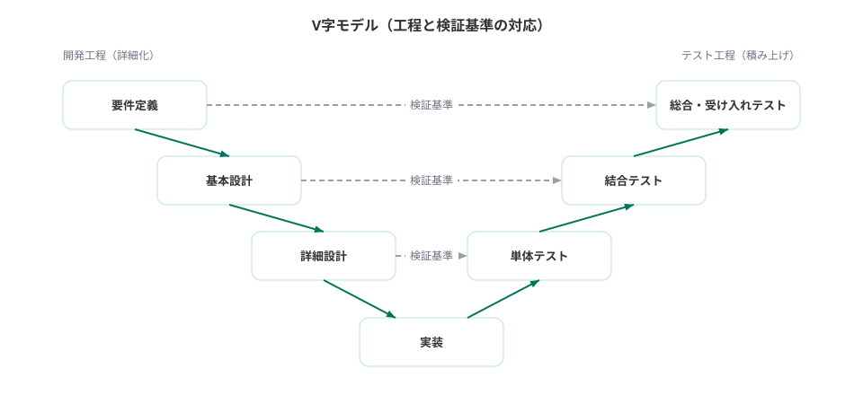

設計書 / Design Docs · Index
ドキュメント・インデックス
PJ {{PROJECT_NAME}}
フェーズ 6
文書数 24
正本 Markdown
TEMPLATE
正本は docs-template/ 配下の *.md。この HTML は各 md を変換した閲覧用ビューである。
各 md の {{プレースホルダ}} を実値に埋めてから、対応する HTML を更新する。
V字モデル対応
上流工程の成果物が、対応する検証工程の合格基準になる。

クリックで拡大
01 要件定義
目的・ペルソナ・機能要件・非機能要件
| ファイル | 文書 | 内容 |
|---|---|---|
| 01_プロジェクト概要.md | プロジェクト概要 | 目的・KPI・ステークホルダー・スコープ外・マイルストーン |
| 02_ペルソナ・ユーザーストーリー.md | ペルソナ・ユーザーストーリー | ペルソナ、ユーザーストーリー、MVP 対象の線引き |
| 03_機能要件.md | 機能要件 | 機能一覧、受け入れ基準(Given-When-Then)、画面一覧と遷移図 |
| 04_非機能要件.md | 非機能要件 | 性能・可用性の目標値、認証認可の水準、法務の要否 |
02 基本設計
構成・用語・機能・画面・DB・API・認可と ADR
| ファイル | 文書 | 内容 |
|---|---|---|
| 01_システム構成.md | システム構成 | 全体構成図・環境・CI/CD(既定記入済み) |
| 02_用語集.md | 用語集 | ドメイン用語とコード命名の対応。実装前に必ず埋める |
| 03_機能設計.md | 機能設計 | 機能ごとの外部仕様(入出力・受け入れ基準) |
| 04_画面設計.md | 画面設計 | 画面遷移図、共通レイアウト、画面詳細 |
| 05_DB設計.md | DB設計(論理) | ER 図と命名規約(論理設計) |
| 06_API設計.md | API設計 | 共通規約と API 一覧 |
| 07_認可設計.md | 認可設計 | ロール一覧と権限マトリクス |
| adr/0000_ADRテンプレート.md | ADR テンプレート | 技術的決定の記録の雛形 |
| adr/0001_技術スタック(テンプレート既定).md | ADR-0001 技術スタック | 既定スタックの決定済み ADR |
03 詳細設計
処理・テーブル定義・単体テスト観点
04 テスト
計画・結合・総合・受け入れの各テスト
| ファイル | 文書 | 内容 |
|---|---|---|
| 01_テスト計画.md | テスト計画 | 範囲・環境・合格基準・テストデータ方針 |
| 02_結合テストケース.md | 結合テストケース | インターフェース単位のテストケース |
| 03_総合テストケース.md | 総合テストケース | シナリオ・性能テスト・脆弱性診断 |
| 04_受け入れテストシナリオ.md | 受け入れテストシナリオ | ユーザーシナリオと実施記録 |
05 リリース
リリース計画とリリースノート
06 運用
監視・障害対応とバックアップ・メンテナンス
| ファイル | 文書 | 内容 |
|---|---|---|
| 01_監視・障害対応.md | 監視・障害対応 | 監視項目・障害レベル・ポストモーテム |
| 02_バックアップ・メンテナンス.md | バックアップ・メンテナンス | バックアップ・ログ運用・依存更新 |
コードが正となるもの
設計書と実装が矛盾した場合、下表の実装を正とし、設計書を追従させる。
| 対象 | 正(Single Source of Truth) | 確認方法 |
|---|---|---|
| API 仕様 | FastAPI の自動生成 API ドキュメント | {{APP_ROOT_PATH}}/docs(Swagger UI) |
| テーブル定義 | Alembic マイグレーション(alembic/versions/) |
マイグレーションファイルとモデル定義 |
| 画面 | テンプレート実装(app/templates/) |
各画面の HTML / コンポーネント |
{{PROJECT_NAME}} 設計書雛形 · 正本は Markdown(docs-template/) · インデックス